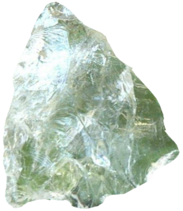
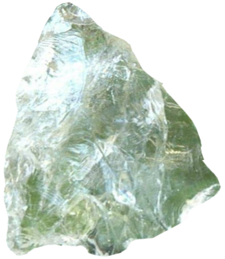
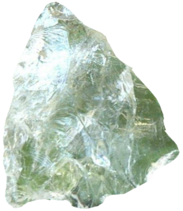
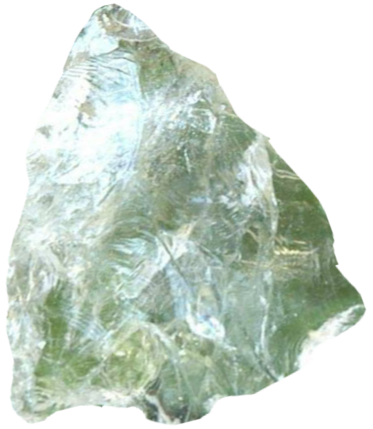

Get touch with your deepest darkest file.
First open up a brand new terminal window.
Navigate to your root directory. The easiest way to do this is to type cd and then press enter.
Now you can enter the following commands one at a time:
mkdir computer-spirit-guide
this command creates a new folder in your home folder called computer-spirit-guide. this is where all of the new files created throughout this journey will go. do not cd into it just yet...
find . -iname "*.txt" -print 2>&1 | grep -v "Permission denied" | sed -e 's/^/./' > ./computer-spirit-guide/files.txt
this command searches your entire system and finds any files with the extension of txt. if you want to get in touch with a different kind of file you can replace .txt with .pdf or any other kind of file. the find command is equivalent use the spotlight search (cmd + space) in the GUI. the command makes sure to ignore the files that return with "permission denied".
finally it places one extra period before the file path. this ensures that the path is absolute rather than relative. once it has all of the file paths for each file the command copies all of them into to a new file called files.txt
if you are a file horder it might take a while...
cd computer-spirit-guide
cd stands for change directory. after running this command your terminal will execute all future commands INSIDE of the computer-spirit-guide directory
sed -e 's;[^/]*/; 📁;g;s; |; 📁;g' ./files.txt > file-tree.txt
we have already used sed once before. it is a magical command that makes it easy to edit and replace text. this command finds all of the forward slashes and spaces in the files.txt and replaces it with the folder emoji.
once everything is replaced it copies each of the the new paths with the folder emojis into file-tree.txt
touch spirit-guide.sh
touch your spirit guide. this command creates a new file called spirit-guide.sh
.sh stands for shell, we want to use a shell script because we will be writing executable commands inside so that we can eventually just make one call to this file and it will run everything inside of it.
now you can open this file spirit-guide.sh in a code editor
you can find the file in your root folder or type open spirit-guide.sh on the command line
now paste the following code into the file:
while read f; do
echo -n "$f "
done <./file-tree.txt
maxPath=0
deepestDarkestPath=0
while read path; do
countPath=$(echo ${path} | grep -o '/' | wc -l)
if (( $countPath > $maxPath )); then
maxPath=$countPath;
deepestDarkestPath=$path;
fi;
done <./files.txt
cat $deepestDarkestPath > ./deepest-file.txt
open ./deepest-file.txt
this code creates two new variables. one called maxPath and one called deepestDarkestFile. the deepestDarkestFile will be equal to the file that has the most folders before it in its path. the maxPath variable will be equal to the amount of folders in the deepest file's path.
while read is a bash command that reads each line of a given text file. in this case the file being read is file-tree.txt
finally we use cat to copy the deepestDarkestPath into a file called deepest-file.txt and open thi
chmod u+x spirit-guide.sh
this command gives your computer permission to execute the commands of the file
./spirit-guide.sh
:-)
How to recieve a message from a file that wants to talk to you.
Open up a terminal window.
Navigate to your root directory.
Then enter the following commands:
mkdir file-spirit-messages
this command creates a new directory called computer-spirit-guide. this is where all of the new files created throughout this guide will go. you do not need to cd into it yet.
find . -iname "*.pdf" -print 2>&1 | grep -v "Permission denied" | sed -e 's/^/./' > ./file-spirit-messages/files.txt
this command searches your entire system finds any files with the extension of txt. the find command is equivalent to the spotlight search in the GUI on a mac. it ignores the files that have "permission denied". finally it places one extra period before the file path. this ensures that the path is absolute ../ rather than relative ./ it prints all of the paths found to a new file called files.txt
cd file-spirit-messages
cd stands for change directory. this command will make sure that all of the future commands you run will happen inside of the computer-spirit-guide folder
touch message.sh
inside of message.sh paste the following code:
sed -e 's;[\.\/@_~-]; ;g;' ./files.txt > ./two.txt
cat ./two.txt | perl -MList::Util=shuffle -e 'print shuffle(<STDIN>);' > ./rand.txt
cat ./rand.txt | tr ' ' '\n' > ./three.txt
cat ./three.txt | perl -MList::Util=shuffle -e 'print shuffle(<STDIN>);' > ./four.txt
cat ./four.txt | tr '\n' ' ' > ./five.txt
sed -e 's;pdf; ;g;' ./four.txt > ./message.txt
while read line; do
n=$((n+1))
if [[ $n -gt 1 && (30 -gt $n)]]
then
mess+=" ${line}"
fi
done < ./message.txt
echo " "
`echo $mess > random-message.txt`
echo " "
echo " "
echo " "
while IFS= read -r -n1 char; do
echo -n "$char"
sleep .1;
done < ./random-message.txt
chmod u+x message.sh
this command gives your computer permission to execute the commands of the file
./message.sh
:-)
How to get give your computer a tarot reading.
Open up a terminal window.
Navigate to your root directory.
Then enter the following commands:
mkdir computarot
this command creates a new directory called computarot. this is where all of the new files created throughout this guide will go.
cd computarot
touch ./tarot.sh
the following commands require a library called jq. if you have homebrew you can run the following command:
brew install jq
if you don't have homebrew you can try this linux command:
sudo apt-get install jq
chmod u+x tarot.sh
open the tarot.sh file in a code editor. paste the following code:
#!/bin/bash
do_reading() {
for run in {1..3}
do
foo=$(curl 'https://raw.githubusercontent.com/dariusk/corpora/master/data/divination/tarot_interpretations.json')
x=`echo $foo | jq --arg random $((0 + RANDOM % 78)) '.["tarot_interpretations"] | .[$random|tonumber].name'`
y=`echo $foo | jq --arg random $((0 + RANDOM % 78)) '.["tarot_interpretations"] | .[$random|tonumber].keywords[0]'`
mkdir "${x//\"}"
cd "${x//\"}"
open .
mkdir "${y//\"}"
mdfind "${y//\"}" | head -3 | while IFS= read -r filez; do cp "$filez" "${y//\"}"; done
cd "${y//\"}"
open .
cd ..
cd ..
done
}
cd ..
if [ -d "computarot-reading" ]; then
rm -r computarot-reading
mkdir computarot-reading
cd computarot-reading
do_reading
elif [ ! -d "computarot-reading" ]; then
mkdir computarot-reading
cd computarot-reading
do_reading
fi